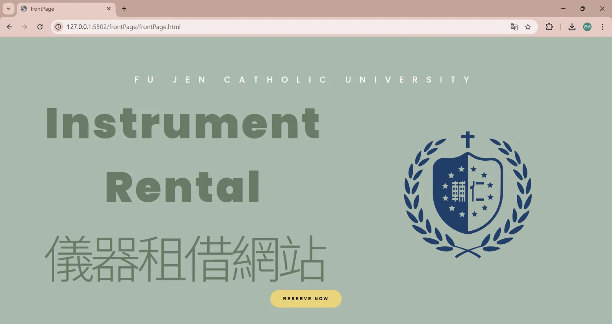
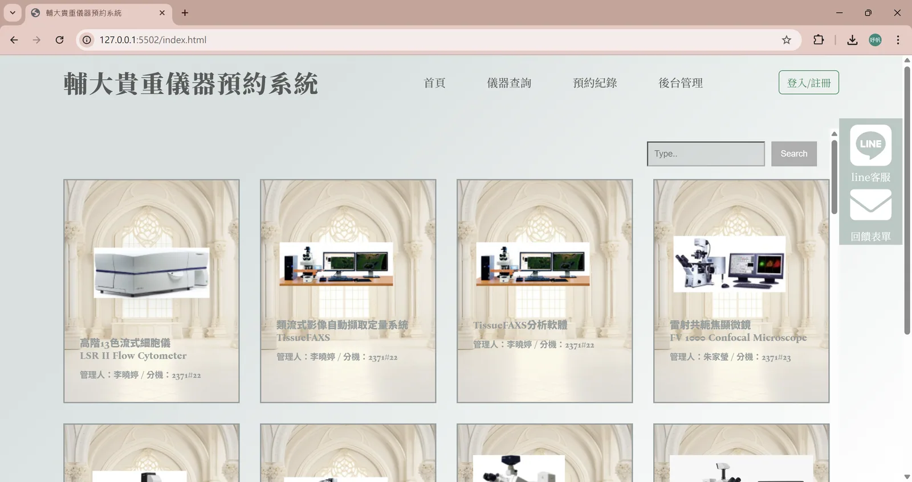
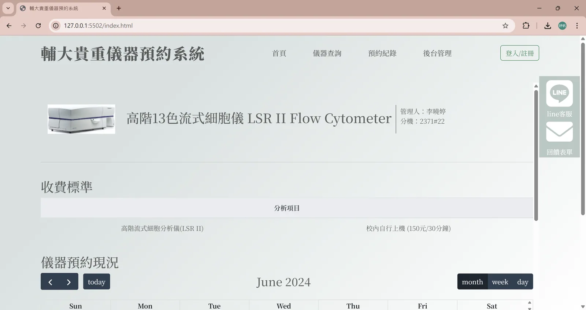
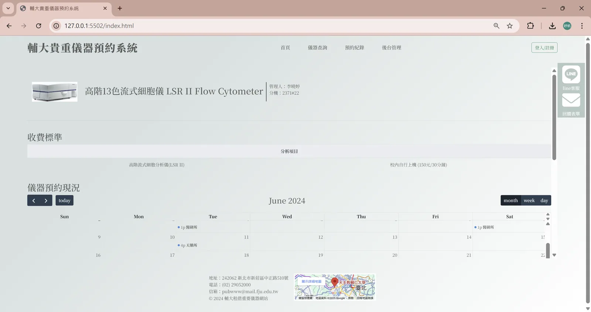
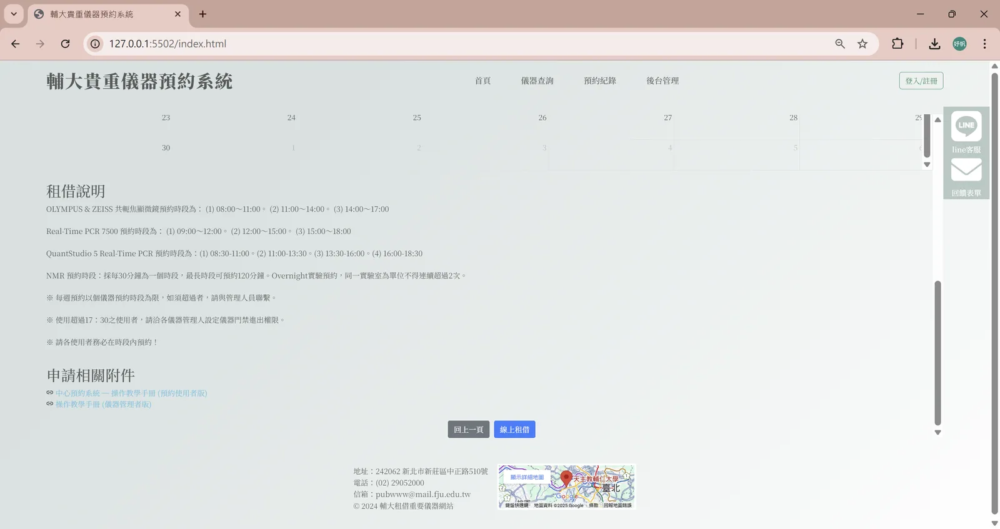
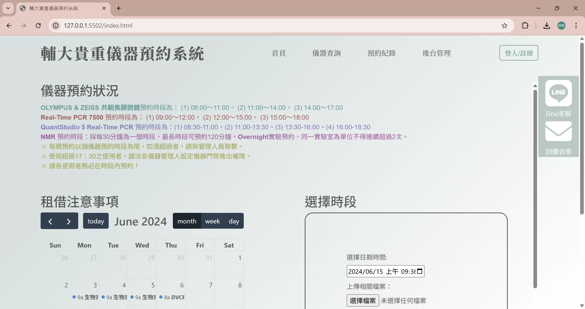
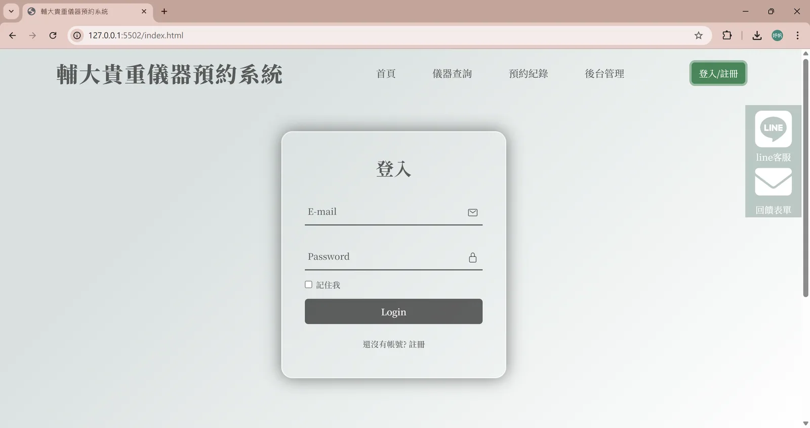
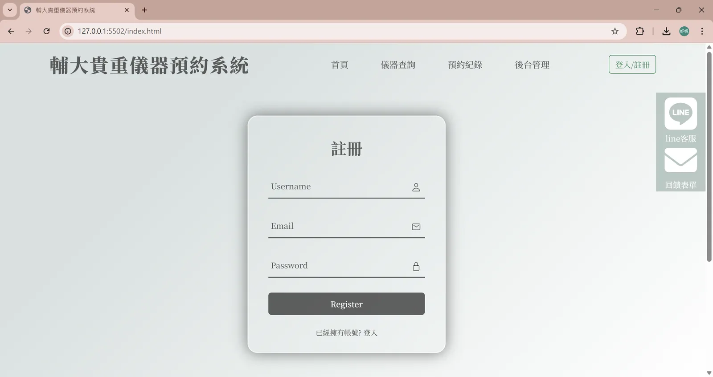

返回作品集
課堂專題
COURSE · 06
輔大實驗儀器租借網站
此網站主要功能為輔大校內儀器的租借管理，具備儀器瀏覽、租借申請與管理後台等功能。
- 課程
- Web前端設計
- 角色
- 小組專題 · 負責部分畫面
- 類型
- 課堂專題
- 技術
- HTML CSS JavaScript
01 — BACKGROUND
背景與問題
輔大校內的貴重儀器需要一套統一的租借管理方式。這個專題以 Web 前端實作一套租借網站，把儀器瀏覽、租借申請與管理後台等功能集中到同一個介面上。
以下為我在小組專題中負責的部分。
02 — APPROACH
執行內容
-
01
首頁與視覺設計
建立網站的進站首頁，定調整體視覺並提供進入系統的動線。
-
02
儀器查詢與清單
以卡片列表呈現貴重儀器，並提供關鍵字搜尋與登入／註冊入口。
-
03
儀器詳情與預約現況
呈現儀器資訊、收費標準，以及月曆形式的預約現況，讓使用者先確認可借時段。
-
04
租借申請與會員功能
租借說明與附件下載、預約時段選擇與檔案上傳，以及登入與註冊流程。
03 — OUTCOME
成果
課堂專題成果
完成儀器租借網站的前端介面
從首頁、儀器查詢與詳情、預約月曆到會員登入註冊，完成一組可操作的頁面；以下為我負責的部分截圖。
04 — SCREENS
成果截圖







